22年前，Inertia 在加拿大多伦多起步，以产品设计与工程开发为核心。22年后，我们已经成长为一家跨太平洋、双城运营的医疗器械制造企业——多伦多负责研发设计与海外市场，广州负责生产制造与供应链管理。这22年，是坚持的22年，也是被信任的22年。
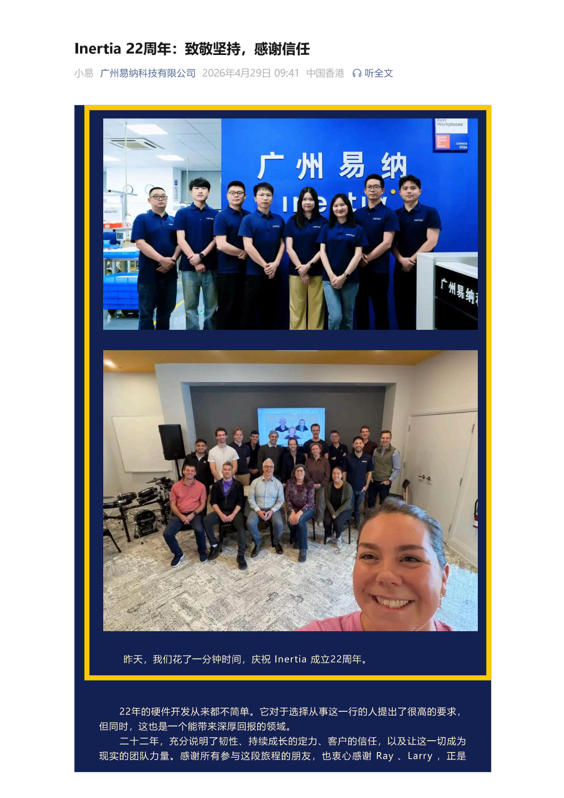
22年。对于一家企业而言，22年意味着穿越多个经济周期，见证行业几轮变革，历经无数风雨洗礼，依然站立、依然前行。2026年5月，Inertia 迎来了第22个生日。

Part 1 22年历程：从多伦多到广州的跨越
2004年，Inertia 在多伦多成立，专注于产品设计与工程服务。2010年，我们在广州设立了中国的运营中心，迈出了跨太平洋布局的第一步。此后十余年，两座城市、两个团队，共同书写了一段医疗器械制造领域的独特故事。
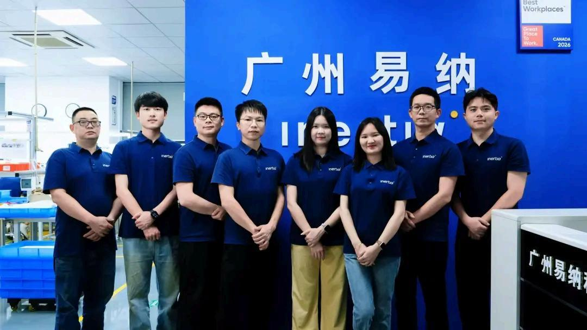
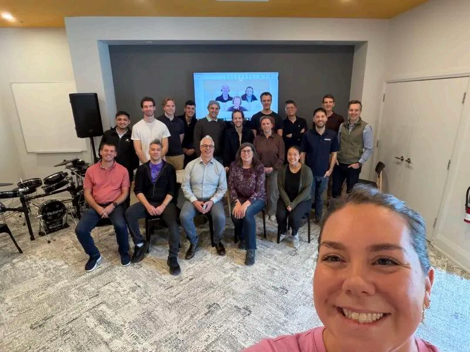
22年间，我们经历了全球金融危机、行业监管升级、供应链重构、疫情冲击……每一次挑战，都成为我们进化的契机。我们从未停止对更高品质、更优服务、更强能力的追求。
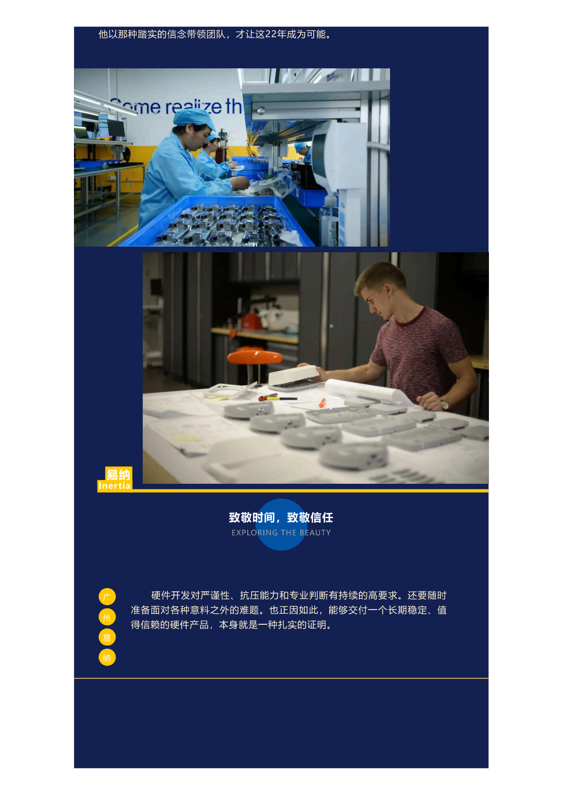
Part 2 致敬坚持：每一位Inertia人的付出
22年的背后，是无数个日夜的坚守、无数次难题攻关的执着、无数个平凡岗位上的全力以赴。22年，变的是技术、是市场、是环境；不变的，是 Inertia 人对品质的敬畏、对客户的承诺、对彼此的信任。
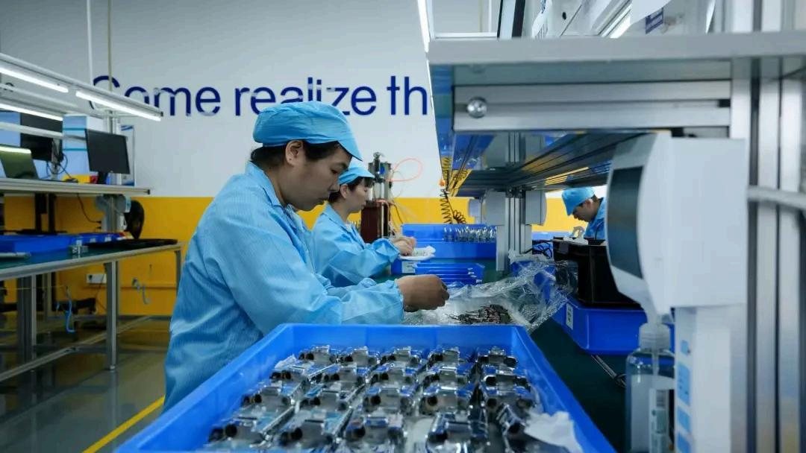
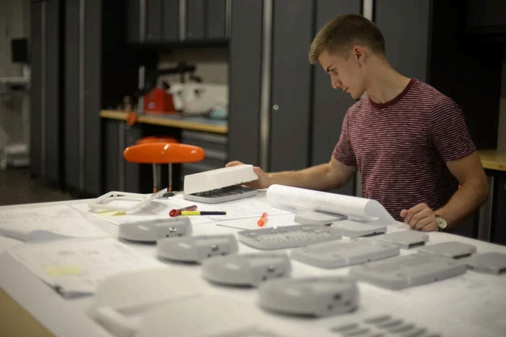
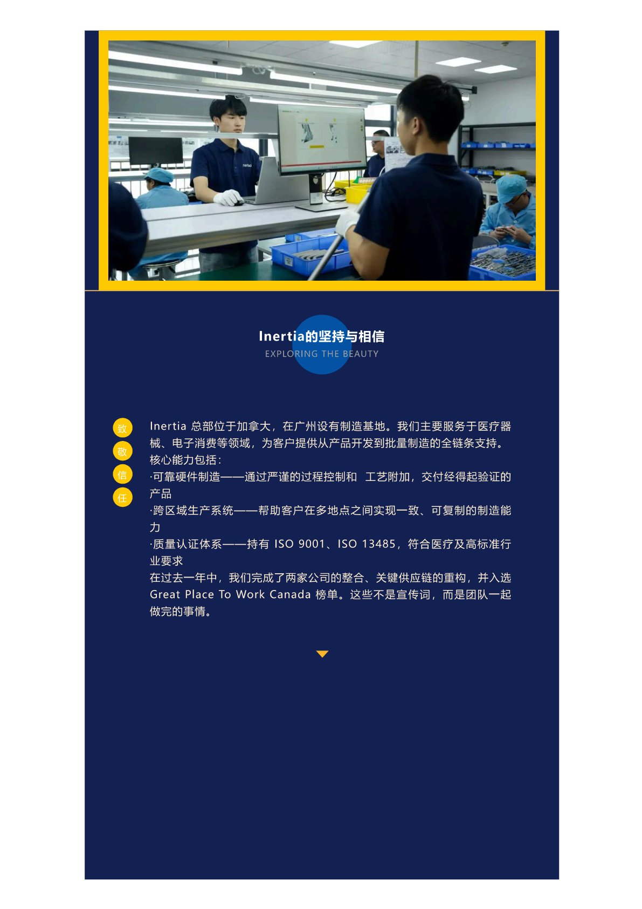
从一线操作员到管理层，从多伦多到广州。我们有着不同文化背景、不同专业领域、不同工作节奏，但我们共享同一个价值观：把每一件产品做好，把每一个项目交付好，把每一位客户服务好。
有人在这里工作了超过15年，见证了公司从几人的设计工作室发展为跨洋制造企业；有人刚刚加入，带着新的视角和热情注入新鲜活力。每一代人、每一位同事，都是 Inertia 22年故事中不可或缺的一页。
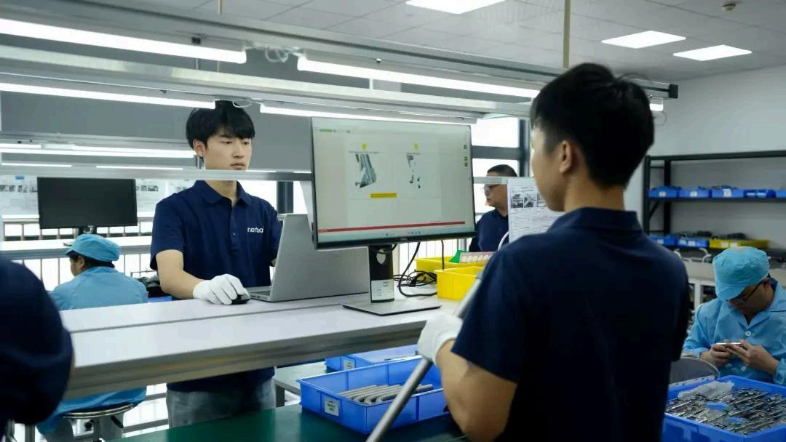
22年，不长不短。长到足以见证一个行业的兴衰起落，短到我们依然觉得自己是那个充满激情的年轻团队。坚持，不是因为容易，而是因为值得。
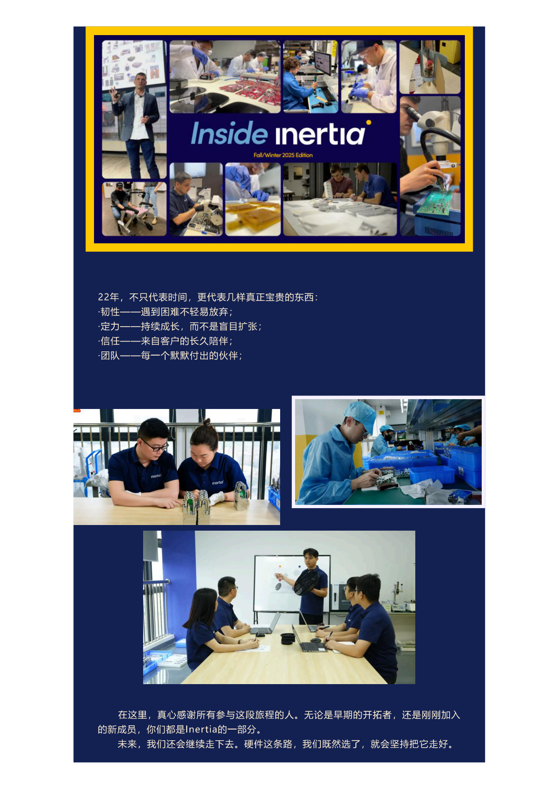
Part 3 感谢信任：每一位客户的选择
22年来，我们服务了数百家客户——从初创公司到世界500强，从北美到欧洲再到亚洲。每一位客户的选择，都是对 Inertia 的信任投票。这份信任，是我们最珍视的资产。
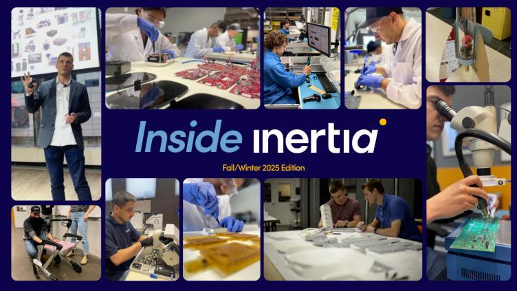

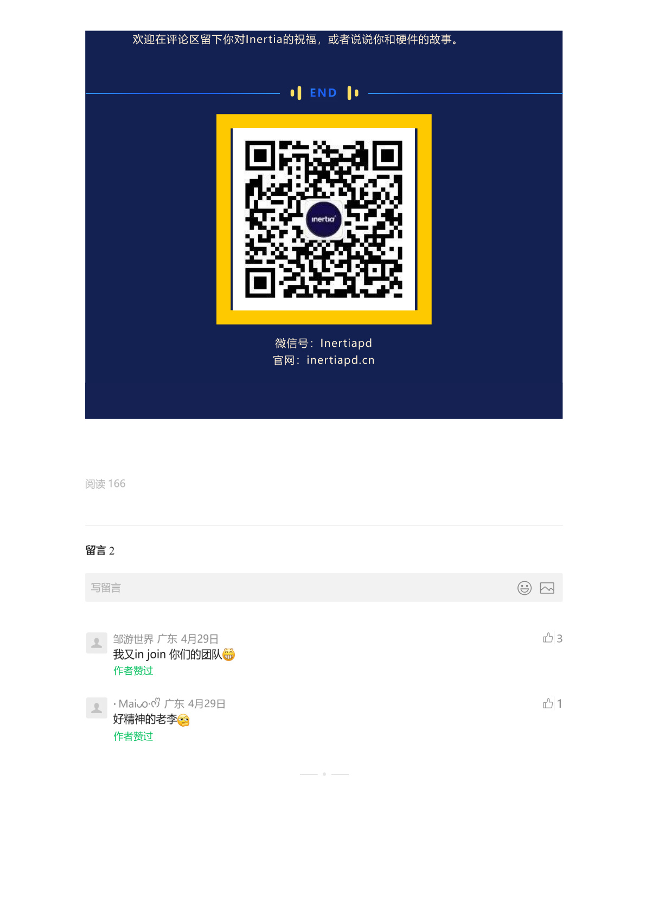
信任是最高的荣誉。客户将产品交给我们制造，意味着将品牌声誉、市场需求、甚至患者安全托付于我们。22年来，我们深知这份责任的重量，从未有一刻懈怠。
我们感谢那些陪伴我们走过22年的长期客户，也感谢那些刚刚认识 Inertia 就选择信任我们的新伙伴。每一次合作，都是我们成长的养分，每一个项目，都是我们精进的机会。

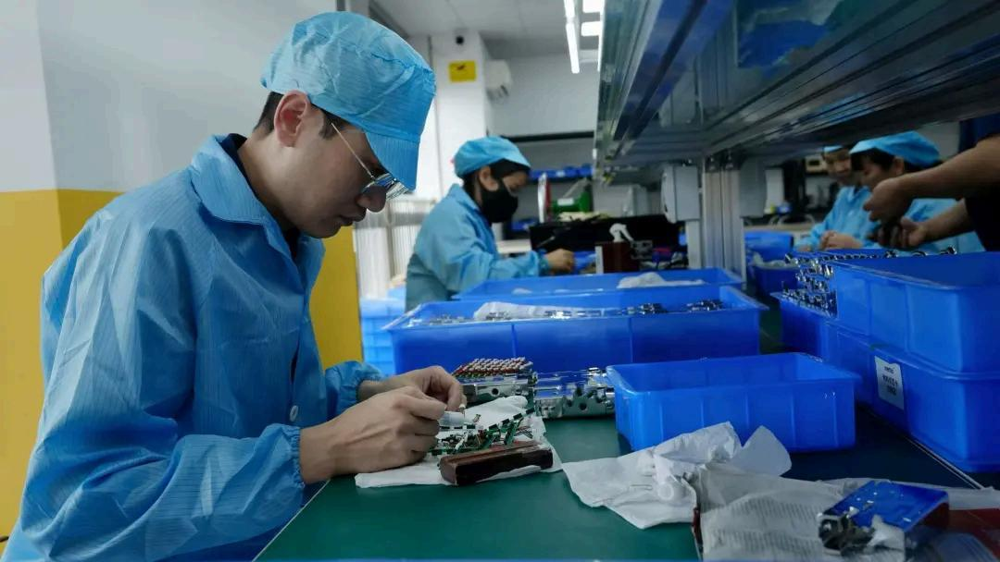
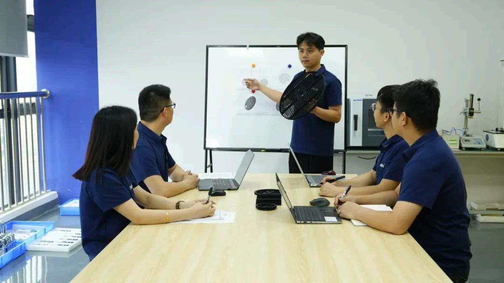
22年，只是开始。我们相信，最好的产品还在下一个项目中，最好的服务还在下一次交付里，最好的团队故事还在明天。22年给了我们底气，也给了我们继续向前的动力。
致敬22年的坚持，感谢22年的信任。 下一个22年，Inertia 将继续坚守品质初心，以跨太平洋双城之力，为全球医疗健康事业贡献更多中国制造的价值。